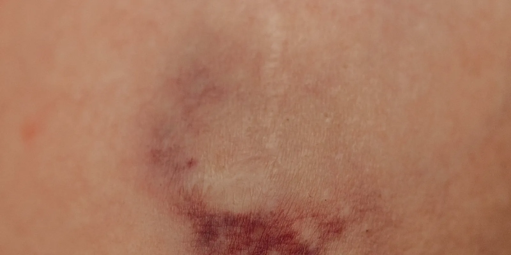

Varicectomía: qué es, cómo es la recuperación y qué otras opciones hay
En el eco doppler o en la consulta te mencionaron la palabra varicectomía, pero nadie te explicó que no es un solo procedimiento sino varios, con nombres parecidos y resultados distintos. Aquí separamos cuál es cuál, qué tan distinta es la recuperación de cada uno y qué otras opciones existen antes de pensar en quirófano.

Si saliste de una valoración para el tratamiento de várices en Medellín con la palabra varicectomía anotada en el papel, lo primero es saber a cuál de las dos te referían: no es lo mismo retirar un tramo de vena por una incisión del tamaño de la punta de un lápiz que programar una cirugía completa de la vena safena con anestesia general. La recuperación, el riesgo y el lugar donde se hace cambian según cuál sea.
Varicectomía: dos procedimientos distintos bajo el mismo nombre
La primera es la microflebectomía, también llamada flebectomía ambulatoria o avulsión por microincisión. El médico marca el recorrido de la vena con la paciente de pie, aplica anestesia local y la retira por tramos cortos a través de incisiones mínimas, sin necesidad de puntos de sutura. Puedes ver cómo es el procedimiento completo en nuestro artículo sobre flebectomía ambulatoria.
La segunda es la safenectomía o stripping: la cirugía clásica que retira la vena safena completa, casi siempre con anestesia general o regional y, en algunos casos, con algo de hospitalización. La Society for Vascular Surgery describe esta vía para venas superficiales muy grandes, tortuosas o con varicosidades subcutáneas extensas, cuando las técnicas menos invasivas no son viables.
Cuándo se indica cada variante
La elección no depende de qué tan grande se ve la várice por fuera, sino de lo que muestra el eco doppler. La microflebectomía funciona mejor con várices tributarias, es decir, ramas que salen de una vena principal, cercanas a la piel. Las guías multidisciplinarias de la Society of Interventional Radiology y la CIRSE la recomiendan para várices sintomáticas o con complicaciones como sangrado o tromboflebitis, y para las que no respondieron a medidas conservadoras.
La safenectomía, en cambio, sigue indicada cuando la vena safena está demasiado dilatada o tortuosa para pasar un catéter de ablación, o cuando la ablación térmica y la escleroterapia ya no son opciones viables. Puedes revisar esas alternativas con más calma en nuestra guía de opciones para tratar las várices. Para la mayoría de los casos con reflujo de la safena, sin embargo, una revisión sistemática de 2023 encontró que la ablación láser endovenosa y la cirugía dan resultados clínicamente comparables a 1, 2 y 5 años, sin que una sea claramente superior en la recurrencia.
Ninguna de las dos es mejor en automático. Depende de tu vena, no de una preferencia general por evitar el bisturí o las inyecciones.
Cómo es la recuperación según el tipo de varicectomía
Con la microflebectomía, la recuperación suele ser rápida: caminas el mismo día, retomas actividades cotidianas en 24 a 48 horas y usas la media de compresión entre una y tres semanas. Las guías de la Society of Interventional Radiology y la CIRSE clasifican la mayoría de las complicaciones como menores, entre ellas hematomas y alteraciones leves y pasajeras de la sensibilidad en la piel, y señalan que las complicaciones mayores son poco frecuentes.
La recuperación de la safenectomía toma más tiempo, porque es cirugía mayor: la anestesia, la incisión y el reposo que sigue no son los mismos que en una microflebectomía. La revisión sistemática que mencionamos antes encontró un dato concreto en esa comparación: los hematomas y moretones fueron significativamente menos frecuentes con la ablación láser que con la cirugía convencional, aunque el tiempo para volver al trabajo no mostró una diferencia clara entre ambas vías.
Eso no convierte a la safenectomía en mala opción. En los casos donde de verdad se necesita, sigue siendo la más indicada. Eso sí significa que, antes de programarla, conviene revisar primero si tu caso realmente la requiere o si una vía menos invasiva alcanza.
En Seravena no recomendamos decidir entre una varicectomía y otra vía mirando solo el tamaño de la vena por fuera: sin un eco doppler que muestre si el reflujo viene de la safena o de una rama tributaria, cualquier elección es prematura.
Qué ofrece Seravena en Medellín frente a la varicectomía
En el consultorio de El Poblado ofrecemos la microflebectomía ambulatoria: con anestesia local, sin quirófano y sin ayuno previo, para várices tributarias que ya salieron a la superficie. No hacemos la safenectomía clásica en quirófano. Cuando el eco doppler muestra que el origen del problema está en la vena safena, ese tramo se trata primero con las técnicas que revisamos en cirugía de várices o sin cirugía: cómo decidir, y la microflebectomía queda para lo que sigue visible después.
Antes de tu próxima cita, anota en el celular desde cuándo notas esa várice, si duele al tacto y si alguna vez te hablaron de reflujo en la vena safena. Con esa nota y el resultado del eco doppler, si ya lo tienes, el especialista puede decirte cuál de las dos varicectomías (si alguna) aplica en tu caso. Puedes agendar esa valoración cuando quieras.
Preguntas frecuentes
¿Qué es la varicectomía?
Es el nombre general para los procedimientos que retiran una vena varicosa. Incluye la microflebectomía o flebectomía ambulatoria, que retira tramos pequeños por microincisiones con anestesia local, y la safenectomía o stripping, la cirugía clásica que retira la vena safena completa con anestesia general o regional.
¿La varicectomía duele?
Depende de cuál. La microflebectomía se hace con anestesia local y la mayoría de las pacientes sienten solo un ardor breve y después presión, sin dolor agudo. La safenectomía es una cirugía mayor con anestesia general o regional, así que no se siente dolor durante el procedimiento, pero la recuperación suele doler más que la de una microflebectomía.
¿Cuánto dura la recuperación de una varicectomía?
Con la microflebectomía puedes caminar el mismo día y retomar actividades cotidianas en 24 a 48 horas, con la media de compresión puesta entre una y tres semanas. La recuperación de la safenectomía toma más tiempo porque es cirugía mayor, y el tiempo puntual lo da el especialista según tu caso.
¿En qué se diferencia la varicectomía de la escleroterapia?
La escleroterapia no retira la vena: se inyecta una solución que la cierra desde dentro, sin incisiones. La varicectomía, en cualquiera de sus formas, sí retira la vena físicamente. Muchas veces se usan juntas: primero se cierra la vena de origen con escleroterapia o ablación, y después una microflebectomía retira lo que quedó visible.
Fuentes
- Multi-disciplinary Quality Improvement Guidelines for the Treatment of Lower Extremity Superficial Venous Insufficiency with Ambulatory Phlebectomy. Society of Interventional Radiology / CIRSE (Journal of Vascular and Interventional Radiology), 2010.
- Lower Extremity Venous Disease and Treatment of Post-Thrombotic Syndrome. Society for Vascular Surgery, 2026.
- Endovenous laser ablation versus conventional surgery (ligation and stripping) for primary great saphenous varicose vein: a systematic review and meta-analysis. Annals of Medicine and Surgery, 2023.